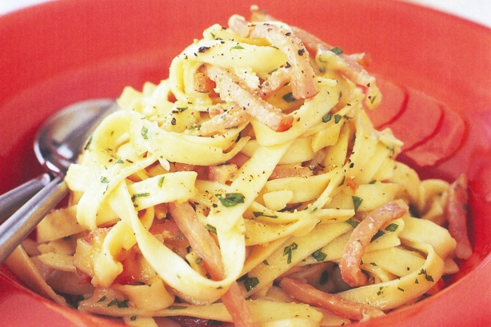

Ingredients:
1 tablespoon olive oil
150g thickly sliced pancetta, cut into thin matchsticks
500g tagliatelle
6 free-range egg yolks
100ml thickened cream
30g unsalted butter
1/4 cup flat-leaf parsley, finely chopped, plus extra to serve
2/3 cup (50g) grated pecorino
2/3 cup (50g) grated parmesan, plus extra to serve
Method:
Step 1.
Heat oil in a large non-stick frypan over medium heat, add the pancetta and cook for 10 minutes until it starts to crisp.
Step 2.
Meanwhile, cook the pasta in a large saucepan of boiling salted water according to packet instructions. Drain.
Step 3.
Lightly whisk eggs and cream in a bowl.
Step 4.
Add the butter and parsley to pancetta, then add pasta and cheeses and toss well to combine. Remove the pan from the heat and quickly add the cream mixture. Toss gently to combine – the pasta's heat will cook the egg slightly and form a creamy sauce. Season, then serve with extra parmesan and parsley.